Tape 1, Side A
 8.3 / 10
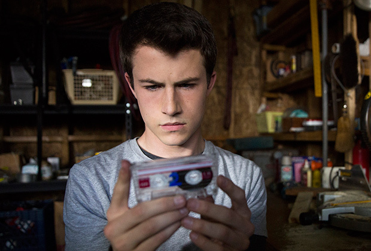
As the school mourns the death of Hannah Baker, her friend Clay receives a box of tapes with messages she recorded before committing suicide.
8.3 / 10
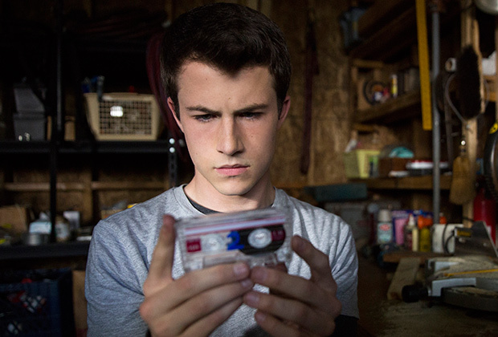
As the school mourns the death of Hannah Baker, her friend Clay receives a box of tapes with messages she recorded before committing suicide.
Tape 1, Side B
8.0 / 10
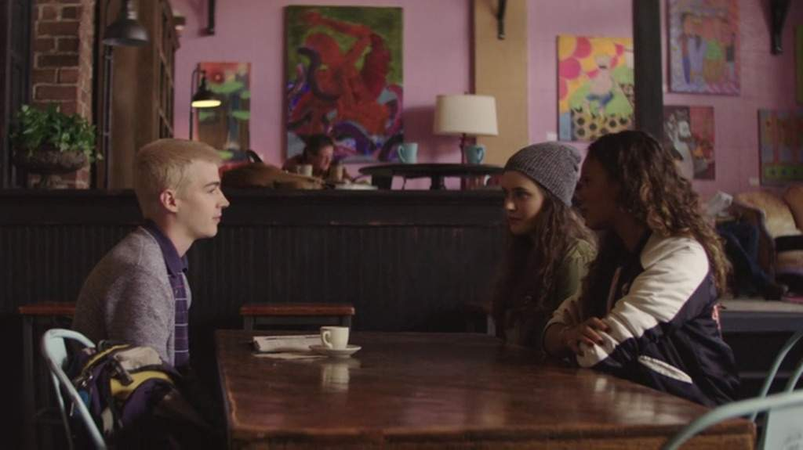
Hannah makes friends with Jessica and Alex, two other new students. Justin doesn't show up at school; Hannah's mother finds something troubling.
Tape 2, Side A
8.1 / 10
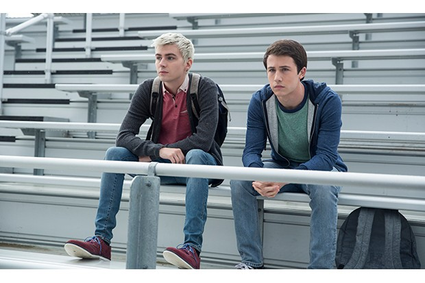
Jealousy and gossip take a toll on Hannah's relationships; Alex struggles with feelings of regret; Clay is pressured into getting drunk.
Tape 2, Side B
8.1 / 10
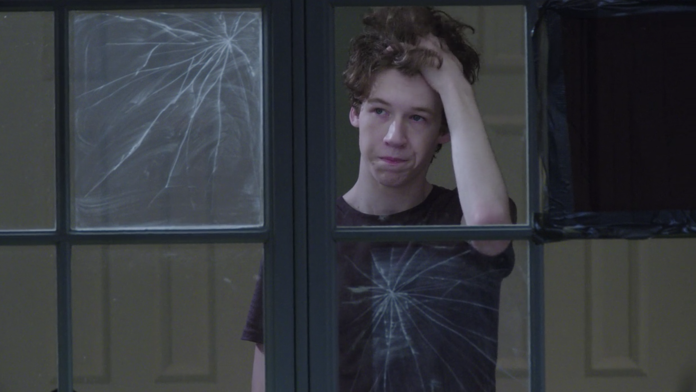
Hannah thinks someone is stalking her and sets a trap; Hannah's mother confronts the principal; Clay strikes back at someone who wronged Hannah.
Tape 3, Side A
8.2 / 10
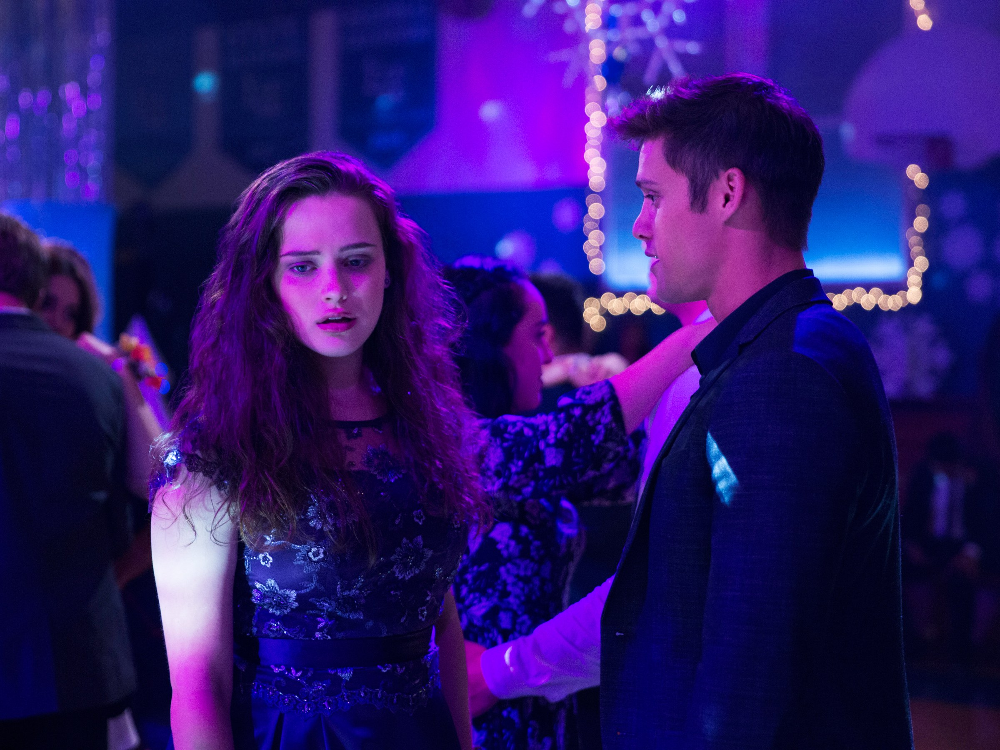
Hannah and Clay connect at the school dance, but a crass rumor ruins the mood. Clay takes Courtney to visit Hannah's grave.
Tape 3, Side B
8.0 / 10
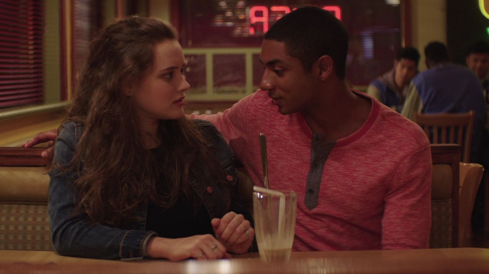
Hannah's date on Valentine's Day doesn't go as planned. Alex gets in a big fight at school and has to face the honor board.
Tape 4, Side A
8.3 / 10
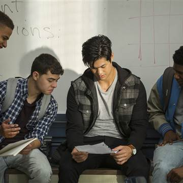
Another student sabotages Hannah during a class project. Clay's nightmares about Hannah spill over into the daytime
Tape 4, Side B
8.1 / 10
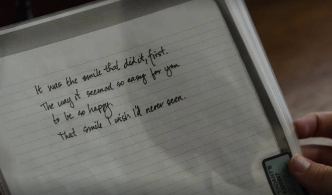
Inspired by a friend's poetry reading, Hannah pours her heart out. Tony confides in Clay about the night of Hannah's death.
Tape 5, Side A
8.6 / 10
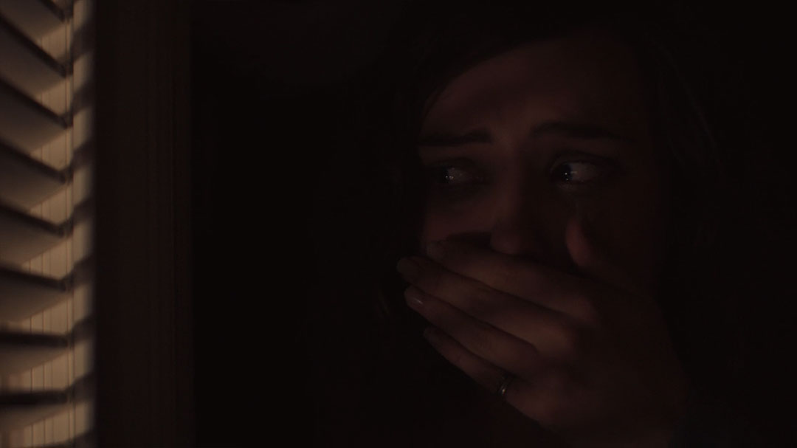
Hannah witnesses a traumatic event at a summertime party. Clay tries to reason with Justin, and Marcus warns him that the worst is yet to come.
Tape 5, Side B
8.5 / 10
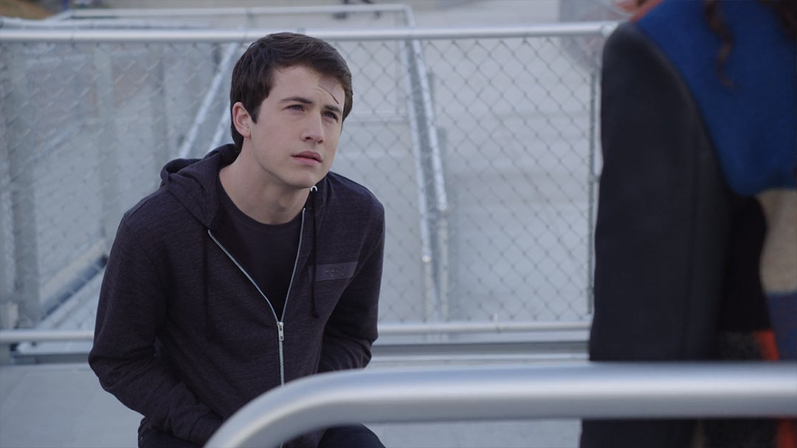
A distraught Hannah gets a ride home from the party. Jessica's behavior grows increasingly erratic, and Clay learns the truth behind a tragedy.
Tape 6, Side A
9.0 / 10
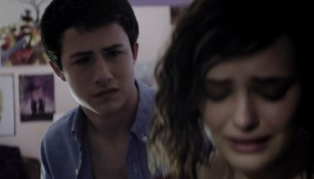
Clay and Hannah grow closer. While Clay spends a heartbreaking night listening to his tape with Tony, tensions boil over at Bryce's house.
Tape 6, Side B
8.9 / 10
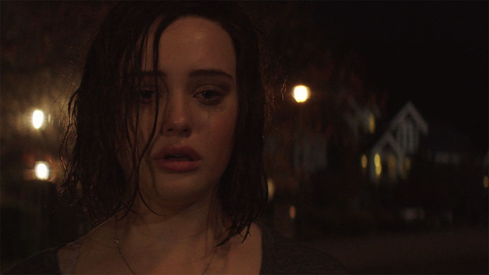
Hannah winds up at a party after an argument with her parents. The students are served with subpoenas, and Justin wrestles with conflicting loyalties.
Tape 7, Side A
9.1 / 10
Hannah seeks help from Mr. Porter, the school counselor. Clay plays the new tape for Tony and weighs what to do next.